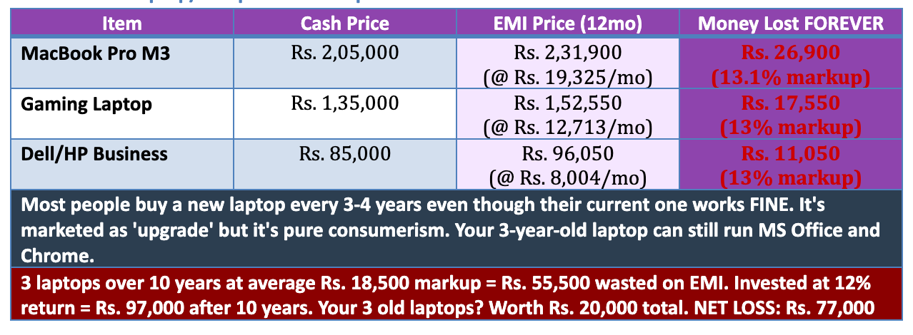
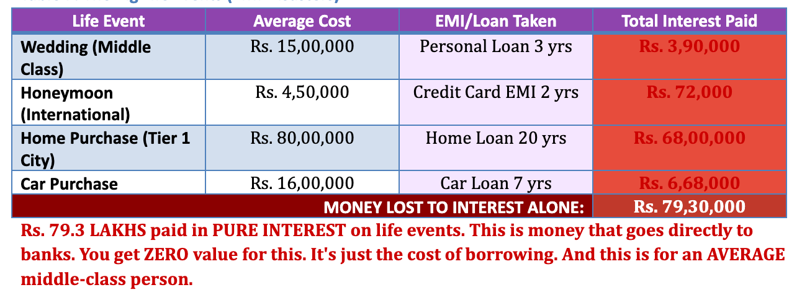

DISCLAIMER: This article contains AI-assisted research, data compilation, and formatting. All financial calculations, EMI projections, and opportunity cost analyses are based on 2026 market rates and standard compound interest formulas. Individual results may vary based on actual loan terms, interest rates, and personal spending patterns. This content is for educational and awareness purposes only and does not constitute financial advice. Consult a certified financial advisor for personalized guidance. The author and AI contributors are not liable for financial decisions made based on this information. AI TRANSPARENCY: This document was created with AI assistance for data analysis, table generation, and content structuring to ensure comprehensive coverage of EMI-related financial pitfalls facing Indian middle-class families in 2026.
The Ant and the Grasshopper — 2026 Remix
Once upon a time, there lived an Ant and a Grasshopper.
The Ant worked steadily. Saved quietly. Ignored noise. The Grasshopper laughed.
“Why live like that?” he said, sipping Starbucks latte bought for ₹420 ($5) every morning. “Life is meant to be enjoyed. And anyway—there’s EMI.”
The Ant stored food for the rainy season. The Grasshopper ordered food online ( Swiggy) because delivery was free (minimum order ₹999 / $12).
The Ant repaired old clothes. The Grasshopper shopped during Aadi Thallupadi and proudly announced, “I saved 40% today!”
The Ant asked, “Saved from what?” The Grasshopper didn’t hear—his noise-canceling headphones were on EMI.
The Ant lived in a modest house, fully owned. The Grasshopper lived in a luxury apartment—technically owned by the ICICI Bank, spiritually owned by Instagram .
“Why worry about tomorrow?” the Grasshopper mocked. “Future income will handle it.”
Then winter arrived.
Not with snow. With layoffs, AI tools, hiring freezes, contract work, and medical bills.
The Grasshopper knocked on the Ant’s door.
“Brother… just for a few months.”
The Ant opened the door, offered food, and said gently:
“I didn’t save because I feared life. I saved because life never sends a calendar invite.”
The Grasshopper checked his phone. Auto-debit successful. Balance insufficient.
Moral (Updated): The grasshopper didn’t starve because he earned less. He starved because he spent tomorrow yesterday.
EMI: The Religion That Conquered India
In 2026, India has a new dominant religion. It's not Hinduism, Islam, or Christianity. It's EMI-ism. And its temples are everywhere: Flipkart , Amazon , Bajaj Finserv , HDFC Bank , every electronics store, every furniture showroom, every jewelry store with a '0% Interest!' banner screaming at you.
The doctrine is devastatingly simple: 'Why pay Rs. 80,000 today when you can pay just Rs. 6,667 per month for 12 months?' The math looks friendly. The marketing is seductive. The trap is invisible until your salary hits your account and vanishes instantly into EMI deductions.
FROM CRADLE TO GRAVEYARD: The Complete EMI Lifecycle
Birth: Baby crib, stroller, car seat - Rs. 45,000 on EMI
Age 5: First tablet for 'education' - Rs. 25,000 on EMI
Age 12: First smartphone (because 'everyone has one') - Rs. 35,000 on EMI
Age 16: Laptop for 'studies' - Rs. 65,000 on EMI
Age 18: Bike for 'independence' - Rs. 1,20,000 on EMI
Age 22: First job = First credit card = Shopping spree on EMI
Age 25: Car loan (can't take metro like a 'loser') - Rs. 8,00,000 on EMI
Age 27: Wedding expenses (jewelry, clothes, gifts) - Rs. 12,00,000 on personal loan/EMI
Age 28: Honeymoon to Europe on credit card EMI - Rs. 3,50,000
Age 29: Furnishing the house (TV, sofa, AC, fridge, washing machine) - Rs. 4,00,000 on EMI
Age 30: Home loan (30-year sentence) - Rs. 75,00,000
Age 35-60: Constant cycle of upgrading phone, laptop, car, appliances on EMI
Age 60-death: Medical emergencies on personal loans because you never saved
Death: Your family takes a personal loan of Rs. 2,00,000 for your funeral
TOTAL LIFETIME EMI COMMITMENTS: Approximately Rs. 1.05 CRORES. Plus interest. Plus hidden charges. Plus processing fees. Plus late payment penalties when you inevitably miss one.
You are NEVER free. From cradle to graveyard, you are perpetually tethered to monthly payments, trapped in a cycle where today's pleasure is mortgaged against tomorrow's salary, which is itself already spent on yesterday's impulses.
"When the Product is Free, YOU Are the Product"
You've heard this about Facebook and Google. They give you 'free' services and monetize your data. But have you applied this principle to 'Zero Cost EMI' and 'No Interest' offers?
LET ME BE BRUTALLY CLEAR: THERE IS NO SUCH THING AS ZERO COST EMI IN 2026.
Here's EXACTLY how the 2026 EMI scam works:
Step 1: Retailer inflates MRP by 12-18% (this is now standard practice in 2026)
Step 2: They advertise 'No Cost EMI' with massive banners and aggressive sales pitches
Step 3: Bank/NBFC charges interest at 14-22% annually (rates are HIGHER in 2026 due to inflation)
Step 4: Retailer gives you a 'discount' that EXACTLY equals the interest amount
Step 5: You pay processing fees (Rs. 199-999 that nobody mentions)
Step 6: You pay GST on the full inflated price (not the discounted price)
Step 7: If you miss even ONE payment, penalty charges of Rs. 500-1,500 kick in
Step 8: Your credit score drops if you're even 1 day late
Step 9: You're locked in - can't return, can't negotiate, can't prepay without penalty
Step 10: Net result - You paid 15-20% MORE than cash price + lost negotiation power + committed to payment discipline you can't maintain + became a debt slave
But here's the REAL cost nobody talks about:
When you commit to EMIs, YOU become the product. You are locked in. You cannot quit your toxic job because 'who will pay the EMIs?' You cannot take a career risk. You cannot negotiate salary from a position of strength. You cannot move cities for better opportunities. You cannot take a 3-month sabbatical to upskill. You are financially imprisoned, and the key is held by Bajaj Finserv, HDFC Bank, Amazon Pay Later, and FlipkartPay.
In 2026, with AI displacing jobs at an unprecedented rate, being locked into EMIs is a DEATH SENTENCE. You need flexibility. You need options. EMIs rob you of both.
THE COMPLETE CATALOG OF FINANCIAL BLEEDING
Where Your Money Goes to Die: Transaction by Transaction
Welcome to the most depressing section of this document. Below are COMPREHENSIVE tables showing EXACTLY how much money you're losing in EVERY transaction. This is your financial autopsy. Read it. Weep. Then ACT.
Table 1: The Smartphone EMI Trap (2026 Edition)

Table 2: The Laptop/Computer EMI Trap
Table 3: The Car Loan Catastrophe (The Biggest Scam)

Table 4: Home Appliances & Electronics EMI Trap

Table 5: The Monthly Subscription Bleeding (2026)

REALITY CHECK: Most of these subscriptions are used <5 times per month. That gym membership? You went 8 times in the first month, 3 times in month 2, zero times for the next 10 months. But you never cancelled because 'I might start going again.'
Table 6: Food Delivery & Lifestyle Bleeding

Table 7: The Big Life Events (EMI Disasters)
THE GRAND TOTAL: YOUR COMPLETE FINANCIAL BLEEDING (Over 10 Years)
This is it. The moment of truth. Below is the COMPLETE summary of where your money went:

LET THAT SINK IN.
Over 10 years, the AVERAGE Indian middle-class person loses Rs. 1.54 CRORES to EMIs, interest, and wasteful spending. The OPPORTUNITY COST - if that money had been invested instead - is Rs. 2.87 CRORES.
That's Rs. 2.87 CRORES that could have been sitting in your bank account, working for YOU, generating passive income, giving you FREEDOM. Instead, it's gone. Vaporized. Spent on depreciating assets, interest payments to banks, and lifestyle choices that gave you 5 minutes of dopamine and 10 years of regret.
YOUR FINANCIAL SELF-AUDIT CHECKLIST (2026 Edition)
Answer HONESTLY. Nobody's watching. This is between you and your financial future. Use a pen. Mark the boxes. Add up your score at the end.


SCORING GUIDE:
160-200: ANT STATUS: You're prepared. You'll survive the winter. Keep going!
120-159: TRANSITION PHASE: You're aware but not acting enough. Course correction needed NOW.
80-119: WARNING ZONE: You're bleeding money and don't fully realize it. URGENT action needed.
0-79: GRASSHOPPER IN WINTER: You are in CRISIS. You will NOT survive the next economic shock. ACT IMMEDIATELY.
CONCLUSION: The Choice That Will Define Your Life
You now know EXACTLY where your money went. Every rupee. Every EMI. Every 'great deal' that wasn't. Every subscription you forgot. Every food delivery that cost you tomorrow's freedom. The numbers are in front of you. Rs. 2.87 CRORES over 10 years - gone.
This is 2026. The winter everyone warned about? IT'S NOT COMING. IT'S HERE.
AI has replaced 40% of entry-level jobs. Mid-level management is being decimated. Even creative fields aren't safe - ChatGPT writes, DALL-E designs, Copilot codes. The job market is skeletal. And you? You're paying Rs. 77,000 per month in EMIs while pretending everything is fine.
EMI has become the new middle-class religion because it promises heaven (instant gratification) without acknowledging hell (financial imprisonment). It's the perfect scam: you FEEL rich while BECOMING poor.
The transformation from grasshopper to ant isn't easy. It requires:
Discipline over dopamine
Delayed gratification over instant pleasure
Security over status
Freedom over fleeting trends
Preparation over prayer
Cash over credit
Needs over wants
Investment over consumption
Your self-audit checklist doesn't lie. Your bank statement doesn't lie. Your EMI burden doesn't lie. The only person lying is you - to yourself.
So here's your choice:
Option 1: Close this document. Forget everything you read. Continue living on EMI. Keep telling yourself 'No Cost EMI' is free. Buy that new phone. Take that vacation on credit. Sign up for one more subscription. Winter is already here. When the next layoff wave hits, you'll wonder why nobody warned you. (Spoiler: Someone did. It was this document. You chose to ignore it.)
Option 2: Accept the truth. Complete your self-audit HONESTLY. Calculate your REAL financial situation. Cancel unnecessary subscriptions TODAY. Stop food delivery for 3 months. Pay off one EMI completely. Build your emergency fund to 6 months. Start investing 30% of income automatically. Live below your means. Ignore the mockery from other grasshoppers. Embrace discipline. Become the ant.
The grasshopper sang all summer and starved in winter.
The ant worked all summer and thrived in winter.
Which one are you?
Choose today. Winter won't wait. It's already snowing.
References & Further Reading
Morgan Housel (Core References)
The Psychology of Money — Morgan Housel
Same as Ever — Morgan Housel
The Art of Spending Money: Simple Choices for a Richer Life — Morgan Housel
“The Art and Science of Spending Money” — Morgan Housel (Collab Fund essay)
Foundational Books on Money, Behavior & Freedom
Your Money or Your Life — Vicki Robin & Joe Domínguez Introduced the idea of money as stored life energy. A philosophical counterweight to consumerism and lifestyle inflation.
The Millionaire Next Door — Thomas J. Stanley & William D. Danko Empirical proof that real wealth is built quietly by disciplined “ants,” not visible spenders.
Thinking, Fast and Slow — Daniel Kahneman Nobel Prize–winning work explaining cognitive biases that make “No-Cost EMI” and discounts feel irresistible.
Antifragile — Nassim Nicholas Taleb A framework for surviving uncertainty. Liquidity, redundancy, and low debt make individuals antifragile in economic shocks.
I Will Teach You to Be Rich — Ramit Sethi Practical systems for automating savings and spending intentionally—useful contrast to reckless EMI-based consumption.
Key Essays & Articles
“The Art of Spending Money” — Morgan Housel A widely cited essay arguing that the purpose of money is not luxury, but control over time, stress, and choices—the exact opposite of EMI dependency.
“The Real Reason Smart People Do Dumb Things With Money” — Morgan Housel Explains why intelligent earners still fall into debt traps due to emotion, envy, and social comparison.
“The Debt Trap of Buy Now, Pay Later” — Financial Times / The Atlantic (multiple analyses) Investigates how BNPL and EMIs normalize debt while hiding long-term costs and credit damage.
India-Specific & Policy References
Reserve Bank of India (RBI) – Household Debt & Consumer Credit Reports Official data on the rapid rise of personal loans, credit cards, and EMI-driven consumption in India.
Economic Times / Business Standard — “No Cost EMI Explained” (investigative articles) Breakdowns of how MRPs are inflated, interest is disguised, and consumers lose negotiation power.
AI, Automation & Job Market Risk
McKinsey Global Institute — The Future of Work & Automation Authoritative research on job displacement, skill erosion, and the need for financial flexibility.
World Economic Forum — Future of Jobs Reports Tracks how AI and automation are eliminating routine roles faster than reskilling can absorb.
Core Idea Thread (Why These Matter Together)
Housel explains why people fall for EMIs (behavior).
Kahneman explains how the mind is tricked (bias).
Taleb explains what survives uncertainty (low leverage).
RBI + McKinsey explain why this time is different (structure, not cycles).
Together, they form the intellectual backbone of EMIsm.#EMIsm #WhereIsMyMoney #PersonalFinance #MiddleClass #DebtTrap #NoCostEMI #FinancialFreedom #MoneyMindset #BehavioralEconomics #ConsumerPsychology #LifestyleInflation #Savings #Investing #EmergencyFund #IndexFunds #FinancialLiteracy #AIAndJobs #FutureOfWork #JobSecurity #Upskilling